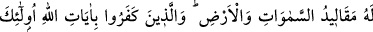

Yükselirdi dervişin ayakları feleğe
Vezir melikten korktuğu kadar
Hak’tan korksaydı, melek olurdu
Allah’tan bizi sadece kendisi için ihlâslı olanlardan kılmasını niyaz ederiz.
62. Allah her şeyin yaratıcısıdır. O, her şeye vekîldir.
“Allah” Hayır ve şer, îman ve küfür “her şeyin yaratıcısıdır.” Ancak bu cebr/zorlama
ile değil, bu fiillerin kâsibinin/kazananının sebepleri yerine getirmesi iledir.
et-Te’vîlâtü’n-Necmiyye’de der ki: “Kulun bütün fiil ve kazançları (kesbleri)
Allah’ın yarattıklarına dâhildir. Allah ve kelâmı buna dâhil değildir. Çünkü hitâb eden
hitâb edilenlere dâhil değildir. Hem de Allah Teâlâ varlıkları kelâmı ile, yâni “Ol”
sözüyle yaratır.”
“O, her şeye vekîldir.” Tüm varlıklar üzerinde dilediği tasarrufta bulunma hakkına
sâhiptir. Vekîl, bir şeyi üstlenip tamamlamayı garanti eden demektir. Allah da kullarının
çıkarlarını gözetmeyi tekeffül eden ve her hususta onlara yetendir. Vekîlinin Allah
olduğunu bilen biri, bütün işlerinde O’nunla yetinir. O varken birtakım plânlar yapmaz,
sadece O’na dayanır.
el-Vekîl isminin özelliği, ihtiyaç ve belâları gidermesidir. Fırtına, şimşek ve benzeri
şeylerden korkan kimse bu ismi çokça zikretmelidir. Böylece Allah hayır ve rızık
kapılarını açarak korktuğu şeyi ondan uzaklaştıracaktır.
63. Göklerin ve yerin anahtarları (mutlak hükümranlığı) O’nundur. Allah’ın
âyetlerini inkâr edenler var ya, işte onlar hüsrana uğrayanlardır.
“Göklerin ve yerin anahtarları (mutlak hükümranlığı) O’nundur.”
“__WORD__ anahtar anlamına gelen “__WORD__ veya “__WORD__ ya da şâz olarak “__WORD__ in çoğulu olup
Farsça’daki “kilit” kelimesinin-her ne kadar insanlar arasında kilit anlamı yaygın ise
de- Arapça’ya anahtar/açar mânâsına geçmiş hâlidir.
Mânâ şöyledir: Gerek ulvî gerekse süflî âlemin anahtarları yalnızca O’nundur. O’ndan
başkasının bu âlemlerde tasarruf imkânı yoktur. Yâni gökyüzü ve yeryüzü hazinelerinin
anahtarları O’na âiddir. Yâni, gök ve yerdeki işlerin mâliki O’dur. O’ndan gayrisinin
oralarda tasarrufu mümkün değildir. Kezâ anahtarları elinde bulunan kimsenin dışında